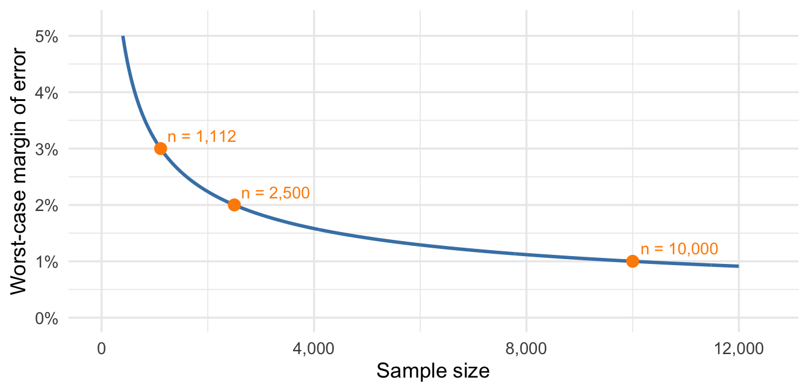
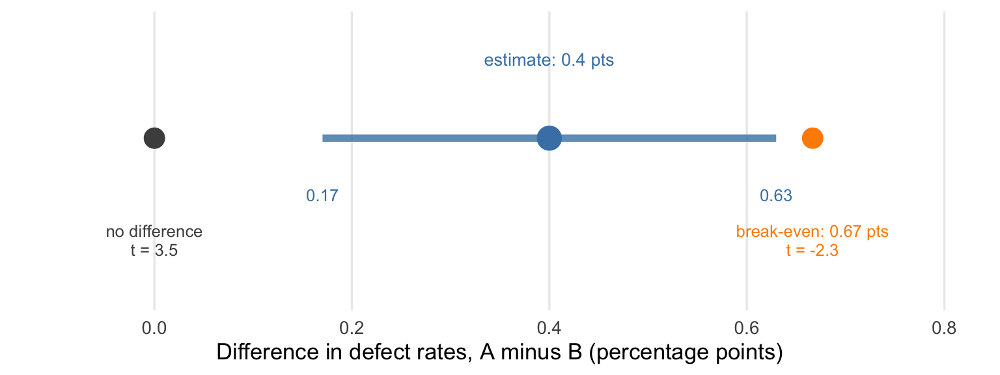

19 Proportions and Comparisons Between Groups
In Chapter 7 we met the hybrid-work experiment that Bloom, Han, and Liang ran at Trip.com (Bloom et al. 2024). They randomly assigned 1,612 employees either to work in the office five days a week or to work from home two days a week, and then recorded who left the company during the study. In the office group 59 of the 820 employees left, or 7.2%. In the hybrid group it was 38 of 792, or 4.8%. That’s a gap of 2.4 percentage points, so attrition was about a third lower for the employees who could work from home. But we know that the two groups would have had different attrition rates even if hybrid work made no difference at all, just because different employees ended up in each group. Random assignment makes each group a random sample of the 1,612 employees in the study, so we will treat the two groups as independent random samples, just as we treated the SAP customers as iid draws. How much of the 2.4 points could be due to chance?
We can’t answer that question yet. So far we have two tools, and both of them are for a population mean. The first is the confidence interval: the estimate plus or minus two standard errors gives us a range of plausible values for the parameter. The second is the hypothesis test, where we use a t-statistic and its p-value to measure how strong the evidence is against one particular hypothesized value. The t-statistic just counts how many standard errors there are between our estimate and the hypothesized value, and the p-value is the probability of seeing a test statistic at least as extreme as the one we observed if the hypothesized value were true (so smaller p-values mean stronger evidence against it). If you look back at how we got these tools, we only ever used two facts about the sample mean: its sampling distribution is approximately normal and centered at the true mean in the population or probability model, and we have an estimate of its standard error.
That means we can use the same tools for the hybrid-work experiment as soon as we have the right standard errors. An attrition rate is a proportion, so we start with the standard error of a sample proportion. The question is about the gap between two groups, so we also need a standard error for a difference. We work that out for a difference between two means first, and then for a difference between two proportions like the one above.
19.1 A sample proportion
We have already worked with proportions as averages. When we looked at loan defaults we coded each loan with a dummy (or indicator) variable that is 1 if the loan defaulted and 0 if it didn’t, and the proportion of defaults was just the mean of that variable. The same is true for any sample proportion: it’s the sample mean of a variable that equals 1 when the outcome occurs and 0 otherwise.
Here’s an example. A marketing team shows 1,100 customers two advertisements for the same product. One was written by a person and the other was written by AI. Each customer sees the two ads in a random order, with nothing to indicate who wrote them, and picks the one they think the AI wrote. The customers make their choices independently, and 531 of them get it right. Let \(X_i=1\) if customer \(i\) correctly picks out the AI-written ad and \(X_i=0\) if not. If we add up all the \(X_i\) we get the number of correct answers, so the fraction of customers in our sample who got it right is just the sample mean of the \(X_i\):
\[ \hat p = \frac{1}{n}\sum_{i=1}^n X_i = \frac{531}{1{,}100} \approx 0.483. \]
Definition 19.1: Population and sample proportion
The population proportion \(p\) is the fraction of the population with the outcome we are interested in. We can also think of \(p\) as the probability that a single unit drawn at random from the population has the outcome. Like \(\mu\), it’s a parameter — a fixed number that we don’t know.
The sample proportion \(\hat p\) is the fraction of a random sample with the outcome, which is the sample mean of the 0/1 variable recording the outcome. It’s our estimator for \(p\). We will write \(\hat p\) for the estimator and also for the estimate that we get from a particular sample.
We’ll treat the 1,100 participants as a random sample of the company’s customers and model their responses as iid draws, just like we did in the SAP example. Then \(p\) is the proportion of all the company’s customers who would correctly pick out the AI-written ad if we showed them this pair of ads. Each \(X_i\) is a 0/1 random variable with mean \(p\) and variance \(p(1-p)\) (we derive these in the technical detail below). Since \(\hat p\) is an average of iid random variables we already know the mean and standard deviation of its sampling distribution, and the Central Limit Theorem tells us the shape:
\[ \hat p \;\approx\; N\!\left(p,\; \frac{p(1-p)}{n}\right). \]
In words: over many random samples the sample proportion is equal to \(p\) on average, and the typical distance between \(\hat p\) and \(p\) shrinks like \(1/\sqrt n\) as the sample size grows. This is exactly the sampling distribution of \(\bar X\) that we had before, except that \(\sigma^2\) is now \(p(1-p)\).
NoteStandard error of a sample proportion
For an iid sample of \(n\) 0/1 observations with population proportion \(p\),
\[ SE(\hat p) = \sqrt{\frac{p(1-p)}{n}} \approx \sqrt{\frac{\hat p(1-\hat p)}{n}}. \]
With 0/1 data the standard deviation is completely determined by \(p\), so we don’t need to compute \(s\) separately. We don’t know \(p\), of course, so we plug in \(\hat p\). As usual the standard error tells us the typical size of the estimation error \(\hat p-p\) across random samples.
For the normal approximation to work well we need to see enough of both outcomes in our sample. As we discussed in Chapter 15 there isn’t one cutoff that works for every problem. If \(p\) is close to 0 or 1 we will need a larger sample than if \(p\) is close to one half, because the distribution of a 0/1 variable is very skewed when one of the outcomes is rare.
Technical detail 19.1: Where \(p(1-p)\) comes from, and why \(s/\sqrt n\) gives the same answer
If \(X\) is a 0/1 random variable with \(\Pr(X=1)=p\), then its mean is \(E[X]=0(1-p)+1(p)=p\). The variance is the average squared deviation from the mean, weighting each deviation by its probability:
\[ \operatorname{Var}(X)=(0-p)^2(1-p)+(1-p)^2p = p(1-p)\left[p+(1-p)\right]=p(1-p). \]
In fact we could have skipped all of this and computed the usual standard error \(s/\sqrt n\) directly from the column of zeros and ones. With 0/1 data the sample variance turns out to be \(s^2=\frac{n}{n-1}\hat p(1-\hat p)\), so the only difference between the two standard errors is whether we divide by \(n-1\) or \(n\). In the advertising study \(s/\sqrt n = 0.015073\) and \(\sqrt{\hat p(1-\hat p)/n}=0.015067\), which are the same to four decimal places.
For the advertising study,
\[ SE(\hat p) \approx \sqrt{\frac{0.483(1-0.483)}{1{,}100}} \approx 0.015, \]
or about 1.5 percentage points. We can use the same two-SE recipe to get a confidence interval:
\[ 0.483 \pm 2(0.015) \approx [0.453,\ 0.513]. \]
TipInterpretation: can customers identify the AI-written ad?
The plausible values for the share of customers who would correctly identify the AI-written ad range from about 45.3% to about 51.3%. That range includes 50%, and it also includes 46%. If customers were just guessing between the two ads they would be right half the time, so what we saw is consistent with customers having no ability to tell the ads apart. If our sampling assumptions hold, we have estimated the share of correct answers to within about 3 percentage points.
Exercise 19.1: An email open rate
A marketing team sends a pilot version of a promotional email to a random sample of 850 customers, and 287 of them open it.
- Estimate the open rate among all customers, and give an approximate 95% confidence interval.
- For a campaign like this one the team considers 35% to be a good open rate. What does your interval tell you about how this campaign compares?
Solution
- The sample proportion is \(\hat p=287/850\approx0.338\) and its estimated standard error is \(\sqrt{0.338(0.662)/850}\approx0.016\). The interval is \(0.338\pm2(0.016)\approx[0.305,\ 0.370]\), or about 30.5% to 37.0%.
- Our estimate of 33.8% is less than 35%, but 35% is inside the interval. Any open rate between 30.5% and 37.0% is plausible, so from this pilot we can’t say that the campaign falls short of the benchmark, and we can’t say that it meets the benchmark either. If it was important to know whether the campaign would reach 35%, the team should have thought about the margin of error when they decided how many customers to include in the pilot (see Section 19.1.2).
19.1.1 Testing a hypothesized proportion
Our interval contains 50%, which is the accuracy we would expect if the customers were guessing blindly. We can use the hypothesis test from Chapter 17 to measure how much evidence we have against that one particular value. The team decided before they collected any data that they would test for a difference from 50% in either direction. If we write \(p_0\) for the hypothesized proportion, the hypotheses are \(H_0:p=0.5\) and \(H_A:p\ne0.5\), and the \(t\)-statistic looks just like it did before:
\[ T=\frac{\hat p-p_0}{SE(\hat p)}, \qquad t=\frac{0.4827-0.5}{0.0151}\approx-1.15. \]
So the sample proportion is about 1.15 standard errors below one half. When the null hypothesis is true \(T\) has approximately a standard normal distribution, which gives us a two-sided p-value of about 0.25. That is, if customers really did identify the AI-written ad correctly half the time, in about a quarter of studies of this size we would see a sample proportion at least this far from 50% (in one direction or the other). With \(\alpha=0.05\) we fail to reject the null hypothesis, which is what we should expect since 50% is inside the two-SE interval. That doesn’t mean we have shown that customers are just guessing! All of the values from about 45.3% to 51.3% are still plausible.
Technical detail 19.2: A standard error computed under the null
You will see many textbooks and software packages that compute the standard error for a test of \(H_0:p=p_0\) using the hypothesized value, as \(\sqrt{p_0(1-p_0)/n}\). The reasoning is that the test already assumes \(p=p_0\), so we may as well use it. In our example this gives \(\sqrt{0.5(0.5)/1{,}100}\approx0.01508\), compared to 0.01507 when we plug in \(\hat p\), and \(t=-1.15\) in both cases. The two versions will be very close unless the sample is small or \(\hat p\) is far away from \(p_0\). We always use the plug-in standard error so that we have one standard error for both the interval and the test. With the two-SE rule, the interval excludes a hypothesized value exactly when the \(t\)-statistic for that value is larger than 2 in absolute value, which corresponds to testing at about the 5% level under the normal approximation.
19.1.2 Margin of error and sample size
When you see a “margin of error” reported for a sample proportion it is usually two standard errors, and it’s often computed in the worst case. The standard error depends on \(p\) through \(p(1-p)\), and \(p(1-p)\) is largest when \(p=0.5\), where it equals \(0.25\). At \(p=0.5\),
\[ SE(\hat p)=\sqrt{\frac{0.5(1-0.5)}{n}}=\frac{0.5}{\sqrt n}, \qquad\text{so}\qquad 2\,SE(\hat p)=\frac{1}{\sqrt n}. \]
In words: no matter what the true proportion is, the two-SE margin of error from a random sample of \(n\) customers can’t be bigger than \(1/\sqrt n\). The advertising study had 1,100 customers, so its margin of error is at most \(1/\sqrt{1{,}100}\approx0.030\), or 3 percentage points.
We don’t need any data to compute the worst-case margin, so we can use it to plan a study. If we want a margin of error of \(m\) we solve \(m=1/\sqrt n\) for \(n\):
\[ n = \frac{1}{m^2}. \]
To guarantee a margin of at most 3 points we round up, to \(n=1,112\) customers. Figure 19.1 shows how the worst-case margin changes with the sample size, along with the sample sizes we would need for margins of 3, 2, and 1 points.
Going from a 3-point margin to a 2-point margin takes about 1,400 more customers, and going from 2 points to 1 point takes another 7,500. The margin shrinks like \(1/\sqrt n\), so to cut it in half we always need four times as many customers.
NotePlanning a sample size for a proportion
For a random sample of size \(n\) the two-SE margin of error for a proportion is at most \(1/\sqrt n\), so a sample of
\[ n \approx \frac{1}{m^2} \]
guarantees a margin no larger than \(m\), if our sampling assumptions hold. When \(p\) is far from one half this is a conservative guarantee. For example at \(p=0.1\) the margin is \(2\sqrt{0.1(0.9)/n}=0.6/\sqrt n\), which is only 60% of the worst case. If we know from earlier data that \(p\) is in some narrow range, we can plan using \(2\sqrt{p(1-p)/n}\) instead, taking \(p\) to be the end of the range that is closest to one half.
Exercise 19.2: A remote-work survey
A technology company with 5,000 employees is considering a permanent remote-work policy. HR asks a random sample of 200 employees whether they would support the policy and 142 of them say yes. Management will only adopt the policy if more than 60% of all employees support it. Treat the responses as iid and assume that the normal approximation is adequate.
- Compute an approximate 95% confidence interval for the proportion of all employees who support the policy.
- Should management go ahead with the policy? Check your answer by computing the \(t\)-statistic for the null hypothesis \(p=0.60\).
Solution
- The sample proportion is \(\hat p=142/200=0.71\) and the estimated standard error is \(\sqrt{0.71(0.29)/200}\approx0.032\), so the interval is \(0.71\pm2(0.032)\approx[0.646,\ 0.774]\).
- All of the plausible values are above 60% (the smallest is about 64.6%). The \(t\)-statistic is \((0.71-0.60)/0.032\approx3.4\). The sample proportion is 3.4 standard errors above the threshold, so we reject \(p=0.60\) at the 5% level. If the sampling assumptions hold, the survey supports going ahead.
19.2 A difference in means
So far we have estimated one mean at a time, but many practical questions are comparisons. Suppose a company pilots an AI chatbot for customer support and finds that the chatbot’s conversations get lower satisfaction scores, on average, than conversations with human agents. Is the chatbot actually worse? Maybe, but we know that two sample means will differ from each other even when the population means are the same, so before we conclude anything we should ask how big a gap sampling variation alone could plausibly produce.
We’ll call the two groups \(A\) and \(B\) and write \(\mu_A\) and \(\mu_B\) for their population means. The parameter we want to learn about is the difference \(\mu_A-\mu_B\). Our data are two independent random samples with sample sizes \(n_A\) and \(n_B\), and the natural estimator is the difference in the sample means, \(\bar X_A-\bar X_B\).
We already know that on average each sample mean is equal to its own population mean, and the mean of a difference is the difference of the means, so \(E[\bar X_A-\bar X_B]=\mu_A-\mu_B\). To get the standard error we need the variance of \(\bar X_A-\bar X_B\), which we can find using the rule for the variance of a difference from the chapter on combining random variables. The samples are independent, so the covariance is zero and we are left with the sum of the two variances:
\[ \operatorname{Var}(\bar X_A-\bar X_B)=\operatorname{Var}(\bar X_A)+\operatorname{Var}(\bar X_B)=\frac{\sigma_A^2}{n_A}+\frac{\sigma_B^2}{n_B}. \]
It may seem strange that we add the variances when we are subtracting the means. The reason is that the estimation error in \(\bar X_A\) and the estimation error in \(\bar X_B\) both end up in the difference, and since the samples are independent there’s no reason to expect those errors to cancel. We also know that a difference of two independent (approximately) normal random variables is again approximately normal. That means everything we did for a single mean (the two-SE interval, the \(t\)-statistic) works here too, as soon as we have a standard error.
NoteStandard error of a difference in means
For independent iid samples from groups \(A\) and \(B\),
\[ SE(\bar X_A-\bar X_B)=\sqrt{\frac{\sigma_A^2}{n_A}+\frac{\sigma_B^2}{n_B}} \approx\sqrt{\frac{s_A^2}{n_A}+\frac{s_B^2}{n_B}}, \]
where \(s_A\) and \(s_B\) are the sample standard deviations in the two groups. This is the same as \(\sqrt{SE(\bar X_A)^2+SE(\bar X_B)^2}\), so if you already have a standard error for each group you can square them, add them up, and take the square root. Just as before, the standard error tells us how far off our estimate of the difference is likely to be, over repeated pairs of samples. It will always be bigger than the larger of the two groups’ standard errors, but smaller than what we would get by adding them together.
This formula is only for independent samples: knowing which units we sampled from group \(A\) should tell us nothing about the units we sampled from group \(B\). Paired data are different. If we measure the same stores before and after a price change, for example, each “before” observation is matched to an “after” observation from the same store and the two samples are dependent. With paired data we compute the difference within each pair, and then treat those differences as a single sample (see the paired assay exercise below).
Let’s look at an example. A tech company trains new hires using one of two coding bootcamps, an intensive program and a standard program, and wants to compare them. The company takes a random sample of employees who completed each program and gives all of them the same standardized coding exercise. No employee is in both samples, and the employees we happen to draw from one program have no effect on who gets drawn from the other, so it’s reasonable to model the two samples as independent. Table 19.1 has the summary statistics.
| Program | Employees | Mean score | SD | SE of mean |
|---|---|---|---|---|
| Intensive | 70 | 129 | 20 | 2.39 |
| Standard | 50 | 120 | 25 | 3.54 |
The average score was 9 points higher in the intensive group, so 9 points is our estimate of the difference in mean scores between all the employees who might take the intensive program and all those who might take the standard program. Of course there are only 120 employees in this study, and with a different 120 we would have seen a different gap. The standard error of the difference is
\[ SE(\bar X_A-\bar X_B)\approx\sqrt{\frac{20^2}{70}+\frac{25^2}{50}}\approx4.27\text{ points}, \]
and the approximate 95% confidence interval is
\[ 9\pm2(4.27)\approx[0.5,\ 17.5]\text{ points}. \]
TipInterpretation: direction and size
All of the plausible values for the difference are positive. If our sampling assumptions hold, then, we have evidence that the mean score is higher for the intensive program. We know much less about how much higher — the plausible values run from about half a point to about 18 points. That matters if the intensive program costs more money or takes more of the employees’ time, since a half point improvement is probably not worth paying for and an 18 point improvement might well be.
We can also test the null hypothesis that there is no difference between the programs, \(H_0:\mu_A-\mu_B=0\), against the alternative \(H_A:\mu_A-\mu_B\ne0\). The \(t\)-statistic is
\[ t=\frac{(\bar x_A-\bar x_B)-0}{SE(\bar X_A-\bar X_B)}=\frac{9}{4.27}\approx2.11, \]
and the two-sided p-value is about 0.035. In other words, if the mean scores were really the same for both programs, only about 3.5% of studies like this one would give a difference that is 2.11 or more standard errors away from zero. With \(\alpha=0.05\) we reject the null hypothesis, as we should have expected since zero isn’t in the 95% confidence interval.
WarningCommon mistake: Judging a difference by whether two intervals overlap
If we compute a two-SE interval for each program’s mean separately we get \([124.2,\ 133.8]\) for the intensive program and \([112.9,\ 127.1]\) for the standard program. These two intervals overlap, even though the interval for the difference doesn’t include zero!
What’s going on? For the two intervals to be completely separated the gap between the sample means has to be bigger than the two margins of error added together, which here is \(2(2.39)+2(3.54)\approx11.9\) points. For the interval for the difference to exclude zero the gap only has to be bigger than \(2\sqrt{2.39^2+3.54^2}\approx8.5\) points. The second threshold is always the smaller one (the square root of a sum of squares is smaller than the sum), and our 9-point gap is in between. So checking for overlap can miss real differences, and when the question is about a difference we should compute the interval for the difference.
Can we say that the intensive program caused the higher scores? Only if the employees in the standard program tell us how the employees in the intensive program would have scored if they had taken the standard program instead (and vice versa). Put another way, if we had given both groups the same program we should expect to see similar average scores, up to sampling variation.
NoteThe direction of selection bias
Suppose that the stronger or more motivated employees were the ones who chose the intensive program. Then the comparison is biased in favor of the intensive program, since the difference in scores reflects the differences in skill and motivation as well as whatever effect the program has. It could easily go the other way — if managers sent their weaker employees to the intensive program, those employees might score lower even if the program helped them quite a bit, and the comparison would be biased against the intensive program. Just as we saw with the SAP customers, a confidence interval only accounts for sampling variability. It does nothing about selection bias.
Random assignment avoids this problem. If we assign employees to programs at random, their ability, motivation, and everything else about them has no influence on which program they get. The two groups will still differ somewhat by chance, but those differences are no longer systematic, and chance differences are what our standard errors measure. Then we can take a difference in scores as evidence about the effect of the program.
Exercise 19.3: A first comparison of means
A company takes independent random samples of 100 tickets from each of its two service teams. Team A’s tickets had a mean resolution time of 18 hours with a standard deviation of 10 hours, and Team B’s tickets had a mean of 15 hours, also with a standard deviation of 10 hours. Assume that the normal approximation is adequate for each sample mean.
- Estimate \(\mu_A-\mu_B\) and find the standard error of your estimate. Then compute the two-SE interval.
- What does the sign of the interval tell you? Is it plausible that the difference in the population is four hours?
- Suppose you reported B minus A instead. What happens to the estimate, the standard error, and the interval?
Solution
- Our estimate is \(18-15=3\) hours. The standard error of each sample mean is \(10/\sqrt{100}=1\) hour, so the standard error of the difference is \(\sqrt{1^2+1^2}\approx1.41\) hours, and the interval is \(3\pm2(1.41)\approx[0.17,\ 5.83]\) hours.
- The entire interval is above zero, so (under our sampling model) Team A’s tickets take longer on average. We are less sure about how much longer. Any difference from about 0.2 hours to about 5.8 hours is plausible, and that includes four hours.
- The estimate would be \(-3\) hours and the interval would be \([-5.83,\ -0.17]\) hours. The standard error is still 1.41 hours. It measures how variable the estimate is, and that doesn’t depend on which mean we subtract from which.
Exercise 19.4: Cloud and on-premise response times
A company wants to compare application response times for cloud and on-premise deployments of its software. It runs a benchmark where 28 cloud instances average 92.4 milliseconds with a standard deviation of 15.6, and 35 on-premise instances average 89.7 milliseconds with a standard deviation of 18.2. Treat the two sets of instances as independent random samples, and assume that the normal approximation is adequate for each sample mean.
- Compute an approximate 95% confidence interval for the difference in mean response time (cloud minus on-premise).
- Can the company conclude that the mean response times are different for the two deployments? Can it conclude that they are the same?
Solution
- The standard errors are \(15.6/\sqrt{28}\approx2.95\) milliseconds for cloud and \(18.2/\sqrt{35}\approx3.08\) milliseconds for on-premise. The difference in means is \(92.4-89.7=2.7\) milliseconds and its standard error is \(\sqrt{2.95^2+3.08^2}\approx4.26\), so the interval is \(2.7\pm2(4.26)\approx[-5.8,\ 11.2]\) milliseconds.
- Zero is a plausible value for the difference and \(t=2.7/4.26\approx0.63\), so we fail to reject the null hypothesis that the means are equal. But that isn’t the same thing as showing that the two deployments perform equally well! The cloud deployment could be 11 milliseconds slower on average, or it could be almost 6 milliseconds faster, and the data are consistent with both. Whether differences like these are important will depend on the application. If they are, the company needs to benchmark more instances.
Exercise 19.5: Did the training shorten response times?
A company introduces a training program to try to reduce response times to support tickets. From its customer research the company believes that customers won’t notice an improvement of less than 30 minutes. To evaluate the program the company takes a random sample of 42 tickets from before the training, which averaged 245 minutes with a standard deviation of 65, and a random sample of 38 tickets from after the training, which averaged 210 minutes with a standard deviation of 58.
- Compute an approximate 95% confidence interval for the reduction in mean response time (before minus after). Is it plausible that the reduction is zero?
- Should the company expect its customers to notice the improvement? Compute the \(t\)-statistic for the null hypothesis that the reduction is 30 minutes.
- The two samples were taken in different months. What else would you want to know before you decide that the training is responsible for the reduction?
Solution
- The standard errors of the two sample means are \(65/\sqrt{42}\approx10.03\) and \(58/\sqrt{38}\approx9.41\) minutes, so the standard error of the difference is \(\sqrt{10.03^2+9.41^2}\approx13.75\) minutes and the interval is \(35\pm2(13.75)=[7.5,\ 62.5]\) minutes. Zero is outside the interval and \(t=35/13.75\approx2.5\). If our sampling assumptions hold, the mean response time went down.
- Our estimate of 35 minutes is larger than the 30-minute threshold, but the threshold is well inside the interval and \(t=(35-30)/13.75\approx0.36\). The plausible reductions go from 7.5 minutes (which customers wouldn’t notice) all the way to 62.5 minutes (which they would). So we have good evidence that response times improved, but we can’t say whether they improved enough for customers to notice.
- When we compare before and after, anything that changed between the two periods gets attributed to the training. Ticket volume, the mix of easy and hard tickets, staffing, and the time of year could all have affected response times. A better design would stagger the training across randomly chosen teams, so that we could compare trained and untrained teams during the same weeks. Then a change that comes from the calendar would show up in both groups.
Exercise 19.6: Same tablets, two measurements
A drug manufacturer is evaluating a handheld assay that is faster than its standard lab assay. A quality lab takes a random sample of 36 tablets from a large production run and measures every tablet twice, once with the handheld device and once with the lab assay. For each tablet we compute the difference between the handheld reading and the lab reading (handheld minus lab). The differences have a mean of 1.5 mg and a sample standard deviation of 3 mg. Model the differences as iid, and assume that the normal approximation is adequate for their mean.
- Compute a two-SE interval for the population mean difference.
- Explain why the sample size is \(n=36\) and not 72. If we computed separate standard deviations for the handheld and lab readings and combined them, what information would we be throwing away?
- The company will accept the device if its readings differ from the lab assay by less than 3 mg on average, in either direction. What does the interval tell you about that standard? Does it tell you how far off a single handheld reading could be from the lab value?
Solution
- The estimated standard error is \(3/\sqrt{36}=0.5\) mg, so the interval is \(1.5\pm2(0.5)=[0.5,\ 2.5]\) mg. Under our model the handheld device gives higher readings than the lab assay, on average.
- We have 36 differences, one for each tablet, and the tablets are independent. The two readings on the same tablet are not: both of them depend on how much of the drug is really in that tablet, so they are positively correlated. When we take the difference the tablet-to-tablet variation in content cancels out. The standard deviation of the differences already accounts for that covariance. If we used the formula for independent samples we would be ignoring it, and our standard error would be too large.
- All of the plausible values for the mean difference are between 0.5 and 2.5 mg, which is inside the 3 mg standard, so the data support accepting the device as far as the average is concerned. But the interval is only about the mean difference. The differences for individual tablets have a standard deviation of 3 mg, so a single handheld reading can easily miss the lab value by more than 3 mg.
19.3 A difference in proportions
We just saw that a proportion is the mean of a 0/1 variable, so everything we did for a difference in means works for a difference in proportions. The only change is that we use \(SE(\hat p)\) where we had \(s/\sqrt n\). The parameter is \(p_A-p_B\) and we estimate it with \(\hat p_A-\hat p_B\). The samples are independent, so just like before the variances add.
NoteStandard error of a difference in proportions
For independent iid samples of 0/1 observations from groups \(A\) and \(B\),
\[ SE(\hat p_A-\hat p_B)\approx\sqrt{\frac{\hat p_A(1-\hat p_A)}{n_A}+\frac{\hat p_B(1-\hat p_B)}{n_B}} =\sqrt{SE(\hat p_A)^2+SE(\hat p_B)^2}. \]
For the normal approximation to work well we need enough of both outcomes in each of the two groups. If we write the proportions as percentages, then the estimated difference and its standard error are in percentage points.
Here is an example. A manufacturer has to choose between two suppliers for a critical component. When a part is defective it delays production, so the company spends six months evaluating the suppliers and inspects 15,000 parts from each one. Supplier A is the company’s current supplier, and the cheaper of the two. Of the parts from Supplier A, 180 are defective, compared to 120 of the parts from Supplier B, so the defect rates are 1.2% and 0.8%. The difference in defect rates is 0.4 percentage points, with
\[ SE(\hat p_A-\hat p_B)\approx\sqrt{\frac{0.012(0.988)}{15{,}000}+\frac{0.008(0.992)}{15{,}000}}\approx0.00115, \]
or about 0.11 percentage points. The approximate 95% confidence interval is
\[ 0.4\pm2(0.11)\approx[0.17,\ 0.63]\text{ percentage points}, \]
and the \(t\)-statistic for testing a difference of zero is 3.5. If our sampling assumptions hold, Supplier A’s parts really are worse.
What are those assumptions? For the normal approximation we are treating the parts we inspected from each supplier as independent draws from that supplier’s production. That’s not the same as assuming that what each supplier produces in the future will look like a random sample of all the settings where the company might use these components, and nothing in our calculation justifies that.
19.3.1 When a detectable difference is too small to matter
Should the company switch suppliers? That depends on the costs. Supplier A charges $12 per part and Supplier B charges $15. The company uses 50,000 parts every year, so switching to B would cost an extra $150,000 per year. On the other hand each defective part costs the company about $450 in downtime and replacement. If the difference in defect rates is 0.4 points (our estimate), staying with A means \(50{,}000(0.004)=200\) more defective parts per year at a cost of $90,000. That’s $60,000 less than the extra money the company would pay to Supplier B.
We can’t stop there, because the true difference in defect rates could be larger than 0.4 points. It only makes sense to switch if the additional defects cost more than the price premium, and for that to happen the difference in defect rates has to be bigger than the break-even value
\[ \frac{\$150{,}000}{\$450\times50{,}000}\approx0.0067, \]
or 0.67 percentage points. In Figure 19.2 we show the interval along with the two differences that matter for this decision, zero and the break-even value.

We reject a difference of zero. We also reject the break-even difference (\(t=-2.3\)). Even if the difference were as large as the upper endpoint of the interval, the additional defects would cost the company $141,700 per year, which is still less than the $150,000 premium. So the company saves money by staying with Supplier A, even though we are quite sure that Supplier A’s parts are worse.
WarningCommon mistake: Reading statistical significance as practical importance
Statistical significance is about the evidence against one hypothesized value, which is usually a difference of zero. It doesn’t tell us whether the difference is big enough to matter. If the sample is large enough, a very small difference can be statistically significant.
For example, a training program that raises scores by a fraction of a point might not be worth three days away from work. On the other hand, a checkout redesign that adds one purchase per 10,000 visits could pay for itself if the site has millions of visitors. Whether a difference is important in practice depends on the costs and benefits of the decision, and on its scale. To find out, compare the confidence interval to the differences that would change what you do.
Technical detail 19.3: A pooled standard error for testing equal proportions
When the null hypothesis \(p_A=p_B\) is true the two groups have the same proportion. Many textbooks and software packages estimate that common proportion by pooling the two groups, \(\bar p=(\text{total with the outcome})/(n_A+n_B)\), and use it to compute a standard error under the null. That standard error is
\[ \sqrt{\bar p(1-\bar p)\left(\frac{1}{n_A}+\frac{1}{n_B}\right)}. \]
In the supplier evaluation \(\bar p=0.0100\) and the pooled standard error is 0.001149, while the unpooled standard error is 0.001149. The \(t\)-statistics are 3.48 and 3.48, so to this many digits we can’t tell them apart. The pooled standard error is only for testing a difference of zero. For the confidence interval, or for testing any other value (like our break-even difference), we use the unpooled standard error from the rule above.
Exercise 19.7: An A/B test
An e-commerce site randomly assigns each visitor to one of two page designs. In this test Variant A converted 156 of its 820 visitors and Variant B converted 171 of its 830.
- Compute an approximate 95% confidence interval for the difference in conversion rates (B minus A).
- Based on these results, should the company switch to Variant B?
Solution
- The sample proportions are \(156/820\approx0.190\) for A and \(171/830\approx0.206\) for B, and their standard errors are 0.0137 and 0.0140. The difference is 1.6 percentage points and its standard error is \(\sqrt{0.0137^2+0.0140^2}\approx0.0196\). That gives us the interval \(0.016\pm2(0.0196)\approx[-0.023,\ 0.055]\), or \(-2.3\) to \(5.5\) percentage points.
- Zero is in the interval and \(t=0.016/0.0196\approx0.8\), so we don’t detect a difference between the two designs. The range of plausible values is wide, though. Variant A could convert 2.3 points better, or Variant B could convert 5.5 points better, and when conversion rates are around 20% either one would be a large effect. So this test doesn’t tell the company what to do. To choose between the designs the company needs to know what an additional conversion is worth, and what it would cost to switch.
Exercise 19.8: Checkout completion by payment method
An e-commerce company wants to compare checkout completion for different payment methods. In one month of data there were 900 checkout attempts using a credit card, and 847 of them were completed. There were 480 attempts using a digital wallet, and 445 of those were completed. Customers chose their own payment method. Treat the attempts as independent, and assume that the normal approximation is adequate for each completion rate.
- Compute an approximate 95% confidence interval for the difference in completion rates (digital wallet minus credit card).
- A manager wants to use these rates to decide whether to promote digital wallets, or to discourage them. What does the interval tell the manager?
- Suppose that the interval had excluded zero. Would that show that the company could raise its completion rate by steering customers toward the payment method with the higher rate?
Solution
- The completion rates are \(847/900\approx0.941\) for credit cards and \(445/480\approx0.927\) for digital wallets, and their standard errors are 0.0078 and 0.0119. The difference is \(-1.4\) percentage points, and its standard error is \(\sqrt{0.0078^2+0.0119^2}\approx0.0142\). The interval is \(-0.014\pm2(0.0142)\approx[-0.042,\ 0.014]\), or \(-4.2\) to \(1.4\) percentage points.
- Zero is a plausible value for the difference, so we can’t say that either method has the higher completion rate, and this comparison doesn’t give the manager a reason to promote or discourage either one. With both methods more than 92% of attempts are completed.
- No. The customers who choose to pay with a digital wallet could be different from the customers who pay by credit card. They might use different devices, place larger or smaller orders, or be in more of a hurry. Any of those could lead to a difference in completion rates that has nothing to do with the payment method itself. The confidence interval accounts for sampling variability in the two rates, but it can’t account for which customers end up in each group. To answer the manager’s question the company could randomly vary which payment method is featured on the checkout page.
19.4 Summary
Table 19.2 has the four standard errors that we have used so far. In every row we get the approximate 95% confidence interval by taking the estimate plus or minus two standard errors. To get the \(t\)-statistic for a hypothesized value we subtract that value from the estimate, and divide by the standard error.
| Parameter | Estimate | Estimated standard error |
|---|---|---|
| Mean \(\mu\) | \(\bar x\) | \(SE(\bar x)=s/\sqrt n\) |
| Proportion \(p\) | \(\hat p\) | \(SE(\hat p)=\sqrt{\hat p(1-\hat p)/n}\) |
| Difference in means \(\mu_A-\mu_B\) | \(\bar x_A-\bar x_B\) | \(\begin{gathered}\sqrt{SE(\bar x_A)^2+SE(\bar x_B)^2}\\=\sqrt{s_A^2/n_A+s_B^2/n_B}\end{gathered}\) |
| Difference in proportions \(p_A-p_B\) | \(\hat p_A-\hat p_B\) | \(\begin{gathered}\sqrt{SE(\hat p_A)^2+SE(\hat p_B)^2}\\=\sqrt{\hat p_A(1-\hat p_A)/n_A+\hat p_B(1-\hat p_B)/n_B}\end{gathered}\) |
The last two rows are built from the first two. The two samples are independent, so the rule for the variance of a difference says the variance of \(\bar X_A-\bar X_B\) is the variance of \(\bar X_A\) plus the variance of \(\bar X_B\). A squared standard error is just a variance. So we find the standard error for each group separately, square them, add them up, and take the square root. Writing that out gives the second line in each row, since \(s_A^2/n_A\) is \(SE(\bar x_A)^2\).
- We build the interval and the test the same way in every row of the table. If you make a mistake it will probably be in choosing the standard error, so that’s the step to check.
- Both of the standard errors for differences assume that we have independent samples. If the data are paired, compute the difference within each pair first, and then use the one-sample formula on the differences.
- A test tells us about one hypothesized value, while the interval shows us all of the values that are plausible given the data. If the decision depends on a threshold or a break-even value we need the interval. We have seen that a difference can be statistically significant and still be too small to act on, and we have seen that when we fail to detect a difference it could still be large.
- All of these intervals only measure sampling variability. They don’t tell us whether the two groups are comparable in other ways, which depends on how the groups were formed. With random assignment we can interpret a difference between the groups as the effect of the treatment. When people choose their own groups we can’t.
19.5 Additional practice
Exercise 19.9: Choose the parameter and standard error
For each of the settings below, name the population parameter, say what the unit of observation is, and give the estimated standard error. What independence assumption does the standard error need?
- We estimate mean resolution time from 100 randomly selected tickets.
- We estimate the proportion of customers who renew from 400 randomly selected customers.
- We compare mean resolution time using two independent samples of tickets, handled by two different teams.
- We compare the proportion of visitors who make a purchase, where visitors were randomly assigned to one of two webpage designs.
- A lab measures the same 36 tablets with a handheld assay and with the standard lab assay, and we estimate the mean difference between them. We have the standard deviation of the 36 differences.
Solution
- The parameter is a population mean \(\mu\), and the unit is a ticket. The standard error is \(s/\sqrt n\). It assumes that the tickets are independent.
- The parameter is a proportion \(p\), and the unit is a customer. The standard error is \(\sqrt{\hat p(1-\hat p)/n}\). It assumes that the customers are independent.
- The parameter is a difference in means \(\mu_A-\mu_B\), and the unit is a ticket. The standard error is \(\sqrt{SE(\bar x_A)^2+SE(\bar x_B)^2}\) \(=\sqrt{s_A^2/n_A+s_B^2/n_B}\). It assumes that the tickets within each team are independent, and that the two teams’ samples are independent of each other.
- The parameter is a difference in proportions \(p_A-p_B\), and the unit is a visitor. The standard error is \(\sqrt{SE(\hat p_A)^2+SE(\hat p_B)^2}\) \(=\sqrt{\hat p_A(1-\hat p_A)/n_A+\hat p_B(1-\hat p_B)/n_B}\). It assumes that the visitors are independent and that the two groups are independent. We get independent groups here because separate visitors were randomly assigned to the two designs.
- The parameter is the mean difference within a tablet, and the unit is a tablet. We compute the difference for each tablet first, and then the standard error is \(s_d/\sqrt{36}\), which assumes that the tablets are independent. The two readings on the same tablet are paired, so we can’t use the formula for independent samples.
Exercise 19.10: How many adults rent?
We used the Federal Reserve’s 2025 Survey of Household Economics and Decisionmaking (SHED) in the chapter on categorical variables, where we plotted its ratings of economic conditions. The survey also asks each respondent about their housing. There are 12,934 respondents in our extract, and 3,426 of them said that they pay rent. The rest either own their home (with or without a mortgage), or they neither own nor pay rent. Let \(p\) be the proportion of all U.S. adults who pay rent. For this exercise you should treat the respondents as a random sample of U.S. adults.
A renters-insurance company estimates the size of its market using a planning model. The model assumes that one in four adults pays rent, so \(p_0=0.25\).
- Compute \(\hat p\), its estimated standard error, and a two-SE interval for \(p\). In one sentence, what does the interval tell you about the share of adults who rent?
- Is the planning model’s 25% a plausible value for \(p\)? Check your answer with a t-statistic. Use the 68/95/99.7 rule to put a bound on the two-sided p-value, and state your conclusion at \(\alpha=0.05\).
- What sources of error does this interval leave out? Explain why a narrow interval doesn’t tell us, by itself, that our estimate is close to the proportion among all U.S. adults.
Solution
- The sample proportion is \(\hat p=3,426/12,934\approx0.265\) and its estimated standard error is \(\sqrt{0.265(0.735)/12,934}\approx0.0039\), or about 0.388 percentage points. The two-SE interval is \(0.265\pm2(0.0039)\), which is about \([25.7\%,\ 27.3\%]\). If we accept the sampling assumption, the plausible values for the share of U.S. adults who pay rent are a little more than one in four, and the margin of error is 0.8 points.
- The whole interval is above 25%, so the planning value isn’t plausible (under the sampling assumption). We can test \(H_0:p=0.25\) against \(H_A:p\ne0.25\), working in percentage points: \[ t=\frac{26.49-25}{0.388}\approx3.84. \] The sample proportion is almost four standard errors above the planning value. About 99.7% of a standard normal distribution is within three standard deviations of zero, so the two-sided p-value has to be less than 0.003. That’s much smaller than 0.05 and we reject the null hypothesis, which agrees with what we saw from the two-SE interval.
- The interval measures how much our estimate would vary from one random sample to the next, if the sampling model is right. It doesn’t account for differences between the people who answer the survey and the people who don’t. We can have a very narrow interval even when these respondents are systematically different from U.S. adults as a whole.
Exercise 19.11: Zero observed errors
A pilot audit of 40 randomly selected insurance claims finds no errors. An analyst plugs \(\hat p=0\) into \(\sqrt{\hat p(1-\hat p)/40}\), gets a standard error of zero, and reports a confidence interval of \([0,\ 0]\). Has the pilot shown that the error rate in the population is zero? Which condition for the interval fails here? (You don’t need to construct a better interval.)
Solution
No. If the population error rate is small but positive we could easily get a sample of 40 claims with no errors. For example, if the error rate is 2% then about 45% of samples of 40 claims would have no errors at all, since \(0.98^{40}\approx0.45\). The normal approximation needs enough of both outcomes in the sample, and we have none of one of them. The standard error is zero because the approximation has failed. It doesn’t mean that we are certain about the error rate.
Exercise 19.12: Precision and audit cost
An insurer has several million claims, and wants an approximate 95% confidence interval for the proportion of claims with billing errors. It costs $10 to audit each claim. Use the worst-case planning margin \(1/\sqrt n\).
- Find the sample size and the cost of the audit for a margin of 4 percentage points. Do the same for a margin of 2 percentage points.
- When we cut the margin in half the cost more than doubles. Why?
- The audit team proposes sampling only from claims with records that are easy to retrieve. Does your calculation in part 1 account for that?
Solution
- If we solve \(1/\sqrt n=0.04\) we get \(n=625\) claims, which would cost $6,250. If we solve \(1/\sqrt n=0.02\) we get \(n=2{,}500\) claims, which would cost $25,000.
- The margin shrinks with \(\sqrt n\), so to cut it in half we need four times as many claims. The cost is proportional to the number of claims, so it is four times as large too.
- No. The margin describes the sampling variability for a random sample from all of the claims. The claims that are easy to retrieve could have a systematically different error rate, and auditing more of them won’t fix that.
Exercise 19.13: Two stores, two intervals
A retailer audits the average transaction size at two of its stores. A random sample of 64 transactions at Store A has a mean of $52 and a standard deviation of $16. A random sample of 100 transactions at Store B has a mean of $58 and a standard deviation of $20. Assume that the normal approximation is adequate for each sample mean.
- Compute the two-SE interval for the mean transaction size at each store.
- The two intervals overlap. The regional manager concludes that “the stores could easily have the same average, so there is no evidence of a difference.” Before you compute anything else, do overlapping intervals justify the manager’s conclusion?
- Treat the samples as independent. Compute the standard error of the difference in means (B minus A), and a two-SE interval for the difference in the population.
- Reconcile your answers to parts 1 and 3 in one or two sentences.
Solution
- For Store A the standard error is \(16/\sqrt{64}=2\) and the interval is \([48,\ 56]\). For Store B the standard error is \(20/\sqrt{100}=2\) and the interval is \([54,\ 62]\).
- No. Each interval gives us the plausible values for one of the means, without reference to the other. Whether the two means could be equal is a question about the difference between them, and the difference has its own standard error and its own interval.
- The standard error is \(\sqrt{2^2+2^2}\approx2.83\). The interval is \(6\pm2(2.83)\), or about \([0.3,\ 11.7]\) dollars.
- The two separate intervals will overlap unless the gap between the means is more than the sum of their margins of error, which is \(4+4=8\) dollars. The interval for the difference will exclude zero when the gap is more than two standard errors of the difference, which is only \(2\sqrt{2^2+2^2}\approx5.7\) dollars. It’s smaller because we add up the squares of the standard errors, and not the standard errors themselves. The gap we observed is $6, which is more than 5.7 and less than 8.
Exercise 19.14: A sales tool with a break-even
An auto-parts distributor is thinking about buying a subscription to a sales-planning tool for its outside sales representatives. Between the license and the selling time that reps would lose to training, the tool costs $4,000 per rep per quarter. That means it only pays for itself if it raises the mean quarterly gross margin per rep by more than $4,000. The distributor ran a pilot for one quarter with 135 reps, and randomly assigned 60 of them to use the tool (group A). The other 75 reps worked as usual (group B).
| Group | Reps | Mean gross margin | SD |
|---|---|---|---|
| A, with the tool | 60 | $96,800 | $19,500 |
| B, without the tool | 75 | $88,400 | $18,000 |
Treat the two groups as independent samples, and assume that the normal approximation is adequate for the mean of each group.
- Let \(\mu_A-\mu_B\) be the effect of the tool on mean quarterly gross margin per rep. Compute the estimate \(\bar x_A-\bar x_B\), its standard error, and the two-SE interval for \(\mu_A-\mu_B\).
- The vendor’s summary of the pilot says that “The tool produced a statistically significant lift in gross margin.” Use your interval to evaluate that statement at the 5% level. How does random assignment help us interpret the difference as the effect of the tool?
- Has the pilot shown that the tool pays for itself? Compare the interval to the $4,000 break-even value. What can the distributor conclude?
Solution
- We will work in thousands of dollars. The estimate is \(96.8-88.4=8.4\). The two groups were measured separately, so we add the variances of the two sample means: \[ SE(\bar X_A-\bar X_B)=\sqrt{\frac{19.5^2}{60}+\frac{18.0^2}{75}}\approx3.26. \] The interval is \(8.4\pm2(3.26)\approx[1.9,\ 14.9]\), or about $1,900 to $14,900 per rep per quarter.
- Zero is below the lower endpoint of the interval, so we would reject the null hypothesis of no effect in a two-sided test at about the 5% level. The vendor’s statement is accurate. Since the distributor assigned the tool at random, the only differences between the two groups (other than the tool) are due to chance, and it’s credible that the lift is the effect of the tool for these reps. We don’t have to worry that we are just seeing a difference between the kinds of reps who would volunteer to use the tool and those who wouldn’t. Random assignment doesn’t make these 135 reps representative of sales reps at other firms, though.
- No. The break-even value of $4,000 is inside the interval, so the pilot is consistent with effects that are below the break-even value and with effects that are above it. Our estimate of $8,400 is above break-even but only by \((8.4-4.0)/3.26\approx1.35\) standard errors, and that isn’t enough to rule out a tool that loses money. So the pilot hasn’t shown that the tool pays for itself. The vendor’s statement tells us that the effect isn’t zero, but the distributor’s decision depends on whether the effect is larger than $4,000.
Exercise 19.15: Mortgage denial rates
The HMDA data in the AER package are from a study by the Federal Reserve Bank of Boston, which looked at 2,380 mortgage applications in the Boston area in 1990. Each application was either approved or denied, and the data record whether the applicant was Black. The counts are in Table 19.3. Treat the applications as a random sample of the mortgage applications in the area that year.
| Group | Applications | Denied | Denial rate |
|---|---|---|---|
| Black applicants | 339 | 96 | 28.3% |
| Other applicants | 2,041 | 189 | 9.3% |
- Compute the estimated standard error and a two-SE interval for the denial rate among all applications in the area. Then do the same for Black applicants and for other applicants separately.
- The interval for Black applicants is about four times as wide as the interval for other applicants. There are two reasons. What are they?
- The difference between the two sample denial rates is 19.1 percentage points. Treat the two groups as independent samples, and compute the standard error of the difference and a two-SE interval for the difference in denial rates.
- What does the interval in part 3 tell us, and what doesn’t it tell us? Be careful. What questions would the researchers at the Boston Fed have needed to answer before they could interpret the gap?
Solution
- For all applications, \(\hat p=0.120\) and the standard error is \(\sqrt{0.120(0.880)/2,380}\approx0.0067\), so the interval is about \([10.6\%,\ 13.3\%]\). For Black applicants, \(\hat p=0.283\) with a standard error of 0.024, and the interval is \([23.4\%,\ 33.2\%]\). For other applicants, \(\hat p=0.093\) with a standard error of 0.006, and the interval is \([8.0\%,\ 10.5\%]\).
- First, the sample of Black applicants is only about one sixth as large. That alone would make the standard error larger by a factor of about \(\sqrt6\approx2.4\). Second, the denial rate for Black applicants is closer to one half, and \(p(1-p)\) is largest at one half. That accounts for the rest.
- From the standard error for a difference in proportions we get \(\sqrt{0.024^2+0.006^2}\approx0.025\), and the interval is about \([14.0,\ 24.1]\) percentage points.
- Zero is far outside the interval, so (under our sampling model) it isn’t plausible that the difference we observed is only due to random sampling variation. The interval doesn’t tell us why there is a gap. The applicants were different in their incomes, their debt ratios, their credit histories, and the properties they were trying to buy, and the raw denial rates don’t adjust for any of those differences. The main question in the Boston Fed study was whether there is still a gap after we account for the applicants’ characteristics. We can’t answer that by comparing two raw rates.
Data used in this section
- Bloom, Han & Liang Hybrid WFH Experiment supplies the attrition counts used in the introduction (Bloom et al. 2024).
- Survey of Household Economics and Decisionmaking supplies the housing-status data used in the additional practice.
HMDAfrom theAERpackage supplies the Boston mortgage applications (Munnell et al. 1996; Kleiber and Zeileis 2008).